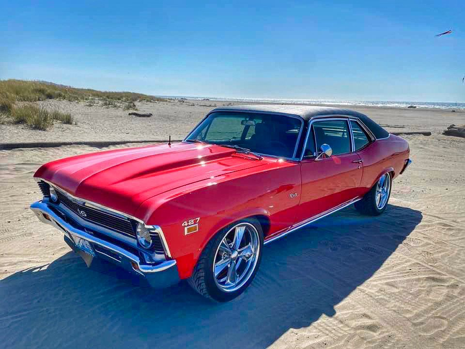

The shop
Run by Scott Jensen.
Revolution Speed Shop is Scott Jensen's shop — now up on the Plateau in Enumclaw, after years in Auburn.
It is a working building, not a showroom: two-post lifts, open wood trusses, a flag on the back wall and whatever is halfway apart at the time sitting in the middle of the floor.
Tim Keptner bought his 1968 Fastback in 2014 while he was in Army flight school. It was a clean, straight, stock 289 four-speed car. He spent a deployment overseas working out what it should become, and when he got home he went looking for a speed shop. He picked this one. The finished car ran in HOT ROD in January 2022.
In February 2026 a 1966 Chevelle built here — 427 LS, T56 Magnum, mini-tubbed, sitting on black Forgeline wheels — was picked up by autoevolution, which named the shop as Enumclaw-based. Two documented cars, both built to be driven rather than parked.